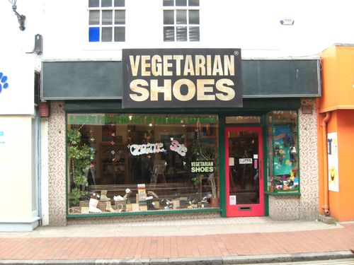
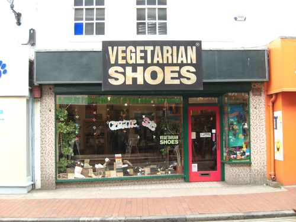

Shopping... in Brighton for Vegans and the Vegan-friendly
Below find a list with short descriptions of the most well known vegan-friendly shops in the city
- Infinity Foods
- A Brighton born and bred worker co-operative since 1971. Focused on vegetarian produce, community and worker rights, fairtrade, and smart consumption.
- HISBE Food
- How it should be. Social enterprise opened the end of 2013. Not specifically labelled as vegan or vegetarian. A regular supermarket. Transforming the food industry by challenging the way big supermarkets do business.
- Sunny Foods
- A small family-owned business that stocks food and some household items for your vegetarian and vegan needs. Fairly non-existent in terms of any web or social media presence, but good banter.
- Vegetarian Shoes
- A small business opened in 1990. All shoes were made to order by the owner, and now are done so within the UK and Europe.
- Cowley Club (Social Centre)
- A private volunteer members-run co-operative, since around 2002. The values reflect Harry Cowley's, based on self-responsibility, self-help, equity, solidarity, and grassroots outside of hierarchical groupings.
Other resources

 
